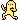
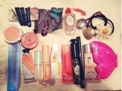

| 2013/01 17 Thu | 345回目*marika |
＼♪／

朝、積もった雪を眺めながら
春のメロディーを聴いて
健気に春はまだかなと
考えていたまりっかです。
この間親戚の方からお年玉として
ヘッドホンもらいました

htcjについてるイヤホンと
同じブランド！
このピンクかわいい。
今日は時間があったので
質問できるだけ多く答えました。
長文注意！
**********
 お茶漬けに必ず入れるもの
お茶漬けに必ず入れるもの
ってありますか？
 ううううめめめめめめ
理想の男性像は？笑
男子の好きな髪型と服装は？(^-^)
最近この質問多いんだあ。
ううううめめめめめめ
理想の男性像は？笑
男子の好きな髪型と服装は？(^-^)
最近この質問多いんだあ。
なんでだろう？
一緒にいて楽しいって思える人かな。
私、落ち着きがないから
落ち着いてる人とか...笑
話聞いてくれる人とか...
でも好きになった人がタイプです！
結局そうなる！
髪も服もきめすぎてないのが
良いです。ナチュラル好きです。
最近はまってる(集めてる)
ものある？
前はブローチって聞いたけど。
やっぱりブローチかな？？
作ったり描いたりすることかな。
いろんなアーティストさんの作品
見たり買ったり、自分で作るために
かわいい材料買ったり...
だいぶ前に載せたのは
ハンズビーで買ったもの

ハンドメイドってぬくもりがあるし、
ひとつひとつ違うから素敵。
ブローチもデザイン考え中なの

料理頑張ってるけど、
どんな料理作りたいの？
家庭的なおかず笑
サルエルパンツ履く男ってどーよ？
サルエルパンツって形によっては
着こなしが難しいのあるよね。
好きです！
私もものすごい股下ながーい
サルエル持ってるから
個握で着てみようかな笑
緊張しまくるときどうしますか？
緊張しまくってると
どうにもならないな

...深呼吸する！
こんなぼくですがまりかを
応援してるという気持ち
伝わってるかなあ？
伝わってるよ^^
応援ありがとう。
この絵は、どんなイメージで
描いたの？
ニコルさんと絵を書く時は何を
話してこれに決めたの？
ニコルさんとは個人の時PVから
会ったー⁇
元から薄ーく乃木坂の三角形が
描いてあったんだ。
テンパっててテーマも何も
好きなように描いてました笑
ニコルさん(ミキクラークさん)
会ってないよー！
めっちゃかわいくって優しかったの; ;
また一緒にお仕事できたら良いな

まりっかが好きすぎて辛いです
どうしたらいいですか？
どうしようか

かなり照れます。
ありがとう嬉しい！
野球自体には興味ありますか？？
球技こわいんだよー><
キャッチボールはできるように
なりたい笑
スポーツしてる男子は
カッコいいとおもいますか?(´・ω・`)
そりゃもう！！
スポーツしてる姿がかっこいい！
お風呂はいつも長風呂派ですか？？
家族に長い！って怒られるー笑
ギターベースドラム
この中で一番すきなの教えてー
え！じゃあ、ベース！
家にお父さんのベース
あるんだよね。

←これはエアギター
...どうでもいいか笑
中華料理好きかな？
青椒肉絲！ゴマ団子！
中華料理ふぅっふ！！！
春物の洋服(アイテム)で
気になるもの有るー?
最近雑誌読んでないから
何が流行るのかわからないけど...
襟がおもしろいシャツとか
ブラウス着たい！
苦手克服のときの
「近くでテレホン」が
頭から離れなくて、
「春のメロディー」の歌詞が
全然覚えられません(´・ω・｀)
それは完全にまりっか中毒に
かかってます

でも病院に行かないでください。
ディズニーはらんど？しー？
最近メンバーがディズニーに
よく行ってるけど行かないの？
どっちも行きたい！
私も行きたいけど学校だ

れいかちゃんブログに
ダメ出ししてるの？(笑)
この前おしゃべりしたときかな。
れいかおもしろいー
 ♪
♪
♪
でもあのブログじゃなかったら
れいかじゃないぜ！笑
まりっかはいじりたくなる可愛さを
持ってますが、そのように思わせる
何かがあるのですか？？笑
なんだ！こっちが聞きたい！
まりっかは悪いことしてない！←
まりっ会に通信制はありますか？
握手会に来てくださる方だけ
じゃないですよ。
コメントありがとう
通信制って表現おもしろい！←
髪きれいだけどにオイルとか
つけてる⁇
付けてないよ
ポッチャリ体型の人はどうですか？
好きですか？
かわいいじゃないですか♪
体型は関係ないです。
**********
リクエスト9
ポーチの中身見せて！

日によってポーチは変えてるよ♪
これは全部！
手前のティッシュケースと
後ろの大きいポーチは
お母さんが作ってくれた


↑よく入れてるもの
小さいボトルはアンティークのもの。
香水を入れてるよ！
ハートじゃないコンチョのヘアゴムは
個人pvで使って、いただいたもの。
こんな感じ

女の子のポーチはにぎやかだ

おやすみなさい。
まりか
コメント(225)
2013/01/17 23:06